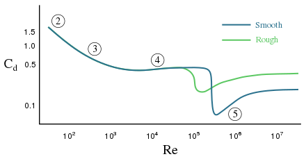
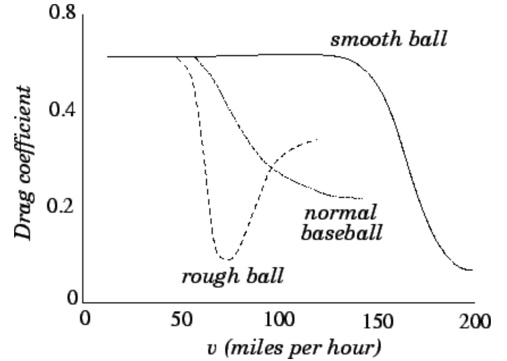
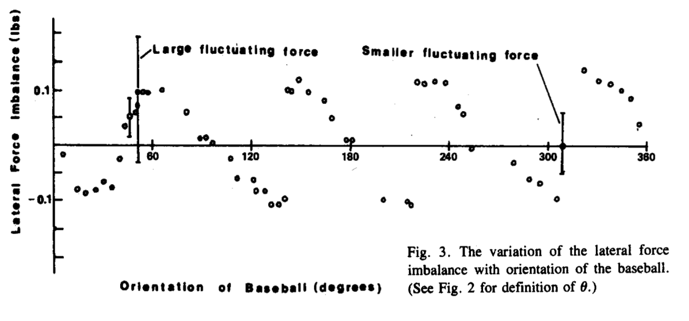
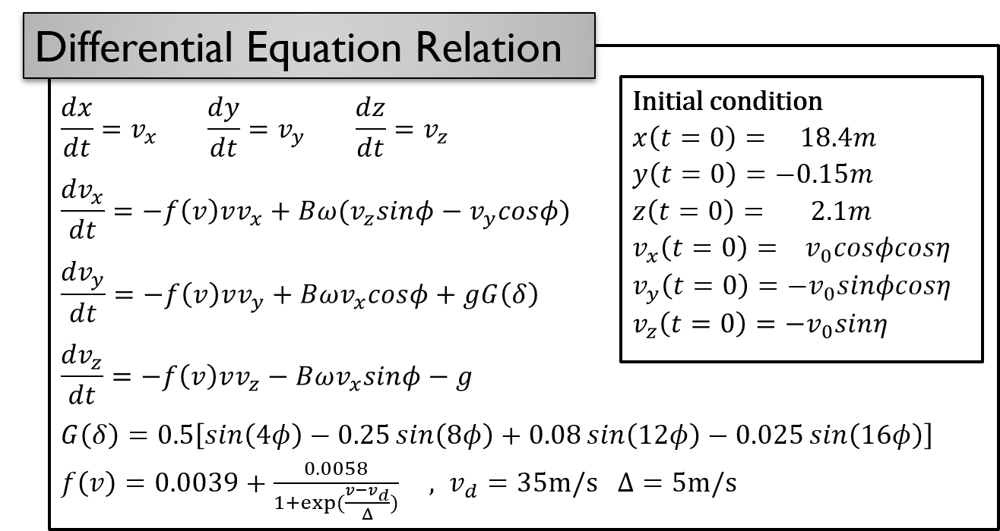
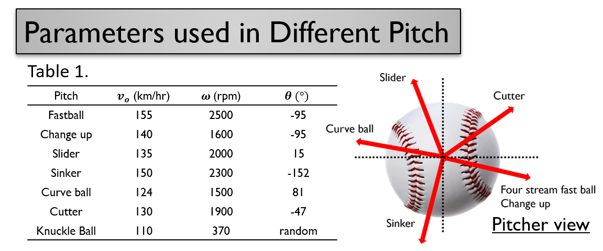
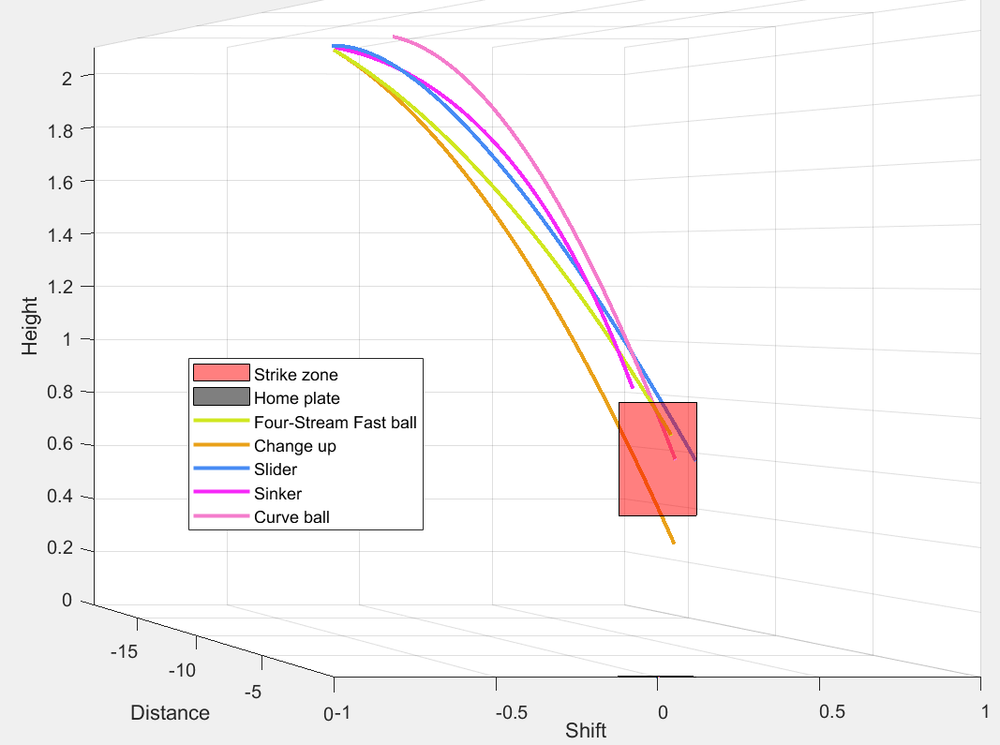
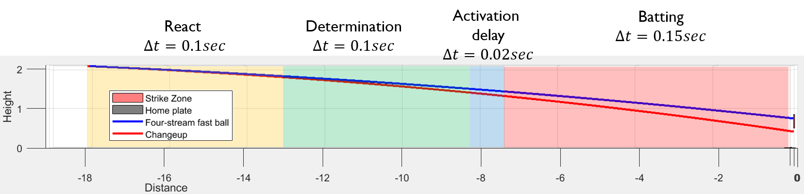
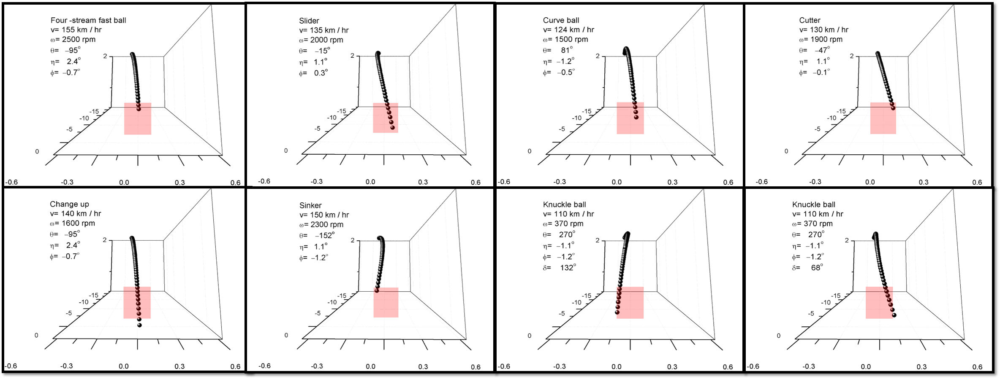

Equation
In order to analysis the trajectory of the baseball, we consider the total force acting on the baseball between the journey form the pitcher to the catcher. We can decompose the total force into gravity, air drag, Magnus force, and lateral random force. The ratio of lateral random force is too small so that it only have an effect in low spin rate ball (low spin rate ball have extremely small Magnus force).
After above consideration, we find air drag, Magnus force and gravity play an important role in baseball motion. Following we going to introduce air drag, Magnus force, and lateral random force respectively.
Air Drag
The direction of air drag is parallel to the direction of the ball and the amplitude depends on the velocity. Air drag can be described by the “drag equation”
\[F_d=\frac{1}{2}\rho v^2C_dA\]Where $C_D$ is the drag coefficient, and usually depends on the geometry of the object, and can be measured by experiment.
In order to describe the air drag acting on the baseball, we can fit the experiment data in Fig. 2 and derive f(v) to describe the amplitude of air drag (eq. 3).
Variation of the drag coefficient, $C_D$, with speed, $v$, for normal, rough, and smooth baseballs. From The physics of baseball, R.K. Adair (Harper & Row, New York NY, 1990).
$f\left(v\right)=0.0039+\frac{0.0058}{1+\mathrm{exp}(\frac{v-v_d}{\mathrm{\Delta }})}~~~~,~~v_d=\mathrm{35m/s}~~~\mathrm{\Delta }\mathrm{=5m/s}$Therefore the drag force in x,y,z component is
\[f_x=-\frac{1}{2}\rho v^2C_dA\times sin\theta \propto -f\left(v\right)vv_x\]Magnus Force
The Magnus effect is an observable phenomenon that is commonly associated with a spinning object moving through the air or another fluid. The force can be \[\mathop{F_m}\limits^{\rightharpoonup}=s(\mathop{\omega }\limits^{\rightharpoonup}\times \mathop{v}\limits^{\rightharpoonup})\]
Random Lateral Force
During low spin rate (Knuckle ball), Magnus force can be neglect and the system is dominated by lateral force. Lateral force act on the baseball is caused by the asymmetry of the baseball, since the direction of the stream is distinct in different angle. The lateral force act on the baseball was measured in the wind tunnel (Fig. 3).
Experiment data shows periodic relationship between the lateral force and the angle.  Fitting the data, lateral force can be approximate as Eq. 2. \[G\left(\delta \right)=0.5\left[{sin \left(4\phi \right)\ }-0.25{sin \left(8\phi \right)\ }+0.08{sin \left(12\phi \right)\ }-0.025{sin \left(16\phi \right)\ }\right]\]
Finally, we can combine each component together. And derive the equation of motion with initial condition.
\[\frac{{dv}_x}{dt}=-f\left(v\right)vv_x+B\omega (v_zsin\phi -v_ycos\phi )\] \[\frac{{dv}_y}{dt}=-f\left(v\right)vv_y+B\omega v_xcos\phi +gG\left(\delta \right)\] \[\frac{{dv}_z}{dt}=-f\left(v\right)vv_z-B\omega v_xsin\phi -g\] \[G\left(\delta \right)=0.5\left[{sin \left(4\phi \right)\ }-0.25{sin \left(8\phi \right)\ }+0.08{sin \left(12\phi \right)\ }-0.025{sin \left(16\phi \right)\ }\right]\] Different type of breaking ball with different initial condition list in Table 1.   Those ODE equations can be solved by MATLAB ODE45 function numerically.Resluts
1. 3-Dimesional with strike zone and different types of breaking ball 
2. Pitcher vs Batter
Using the parameter in Table 1 and MATLAB to solve the ODE equation numerically, we can obtain (x, y, z, t) data. Plotting the data in 3D space, we can simulate the trajectory of different breaking ball. Besides, observing the trajectory at x-z plane, we can find vertical shift isn’t obvious initially between fastball and change up. Therefore, batter can be easily confused by the breaking ball. More results are shown beneath in the catcher view. Interestingly, the trajectory of the knuckle ball is abnormal, which seems like a flying butterfly.
3. Results of each kinds breaking ball:
